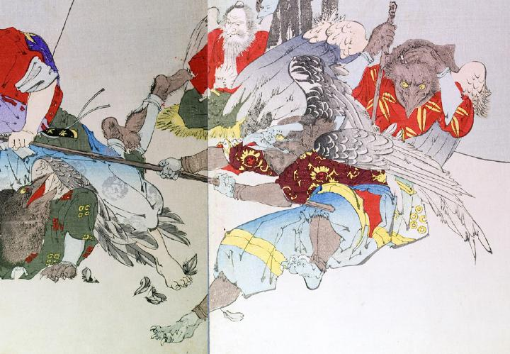

長い棒を持った烏天狗。黒い羽毛に覆われているが、手足と嘴は青白い。目は黄色く描かれている。小豆色に黄色の模様が入った着物と青い袴をはき、黒い手甲と脚絆を付けている。背には大きな翼がある。
著作者：秀湖／出典：親書誌：U426_nichibunken_0144：御曹子牛若丸鞍馬ニ劍法ヲ修ス；オンゾウシウシワカマルクラマニケンポウヲシュウス／日付：2009／資源識別子：U426_nichibunken_0144_0001_0003
Copyright (c)2010- International Research Center for Japanese Studies, Kyoto, Japan. All rights reserved.